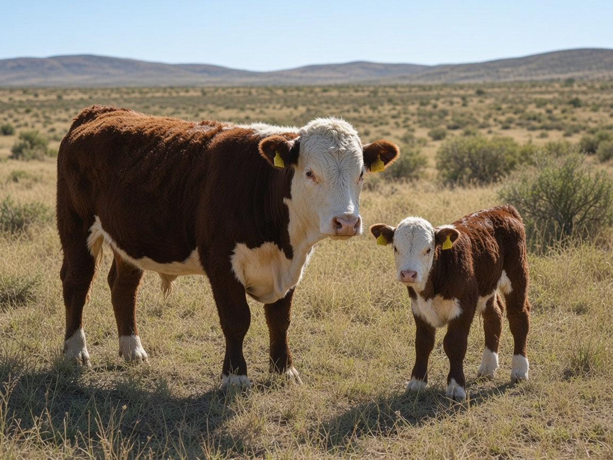

¿Cómo está el campo hoy?
12,6 ha/EV
Destete ~62 %
~6 kg carne/ha
Destete ~62 %
~6 kg carne/ha

Su lote en el satélite. Para decidir carga, pasto y agua. Sin desmonte y sin recortar la bebida.
Toque o flecha → · Un productor del salón va a elegir la carga
Un productor elige. El pasto de las 500 ha no cambia: cambia lo que come el rodeo.
También + y −. Después, flecha → y el año responde.
Verde = lo que da el campo. Oro = lo que comen. Rojo = hay que actuar.
Toque cada una. En el stand se lee el lote del productor, no este ejemplo.
Escanee y pruébelo en el celular. En el stand: las 4 esquinas del plano, las aguadas y la hacienda.
No se recorta el agua de bebida. No se desmonta. No es soja.
jose2026-market.github.io/campo-gemelo-digital-sl